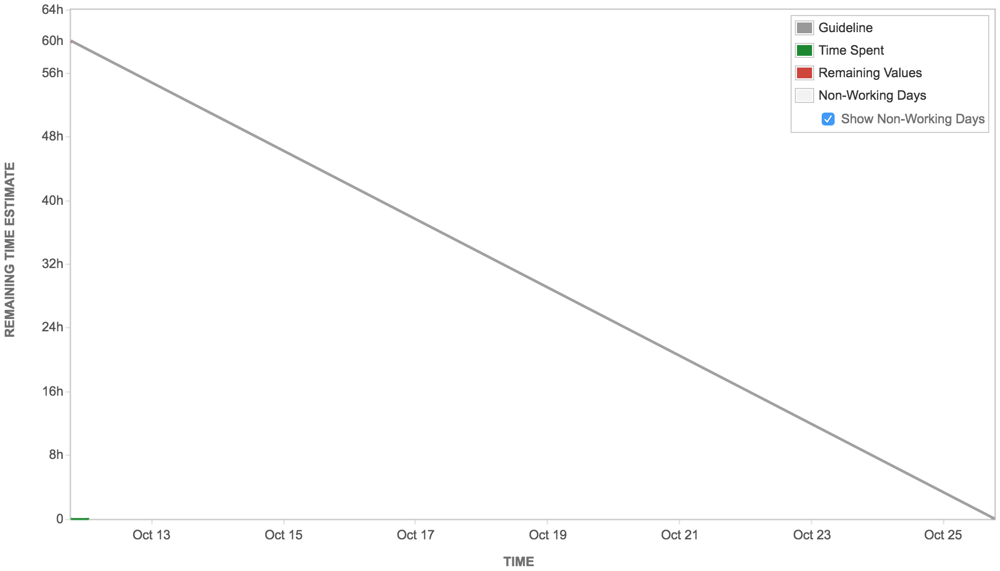
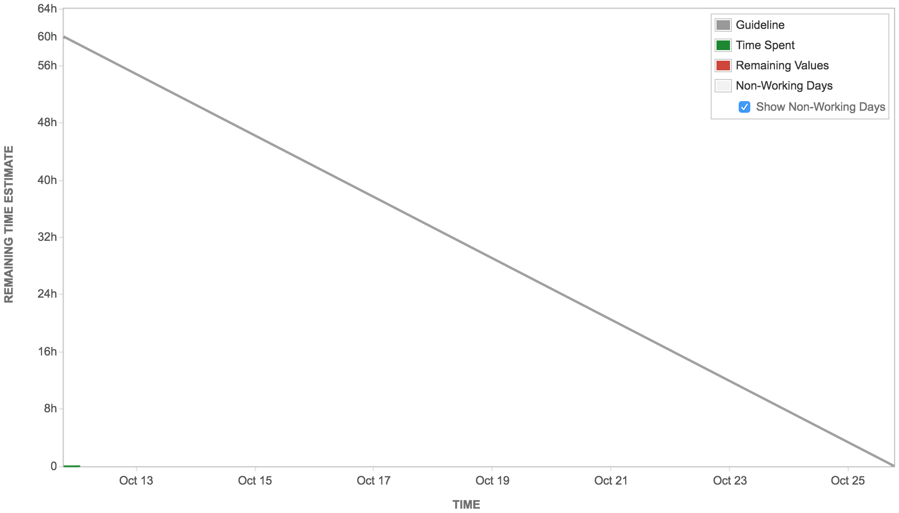

What tools, if any, will you use for your task board?
What tools, if any, will you use for your burn-down chart?
Who will maintain the burn-down chart? How?
- The burn-down chart will be automatically generated by JIRA. Everyone in the team should log working hours in JIRA so it gets the information it needs for generating the burn-down chart.
What is every team member’s role?
- Andrew Wang: meeting organizer, master branch maintainer, developer
- Ryan You: developer
- Rose Gao: proofreader, developer
- Andrew Huang: developer
- Wentao Sui: developer
What tools, if any, will you use for communication?
- Skype, Wechat, Google Docs and phone.
When do you plan to meet in person?
- We have team members with different tight schedules, so we primarily have meetings online using Skype.
How will you use your repository on GitHub?
- We will use of Github branch feature so that everyone in the team will create a own branch on the team project working directory.
Which machines will be used for development by each team member? E.g., the lab machine, a Linux laptop, a Windows home computer, etc.
- Andrew Wang: a MacBook Pro with Linux virtual machine installed.
- Ryan You: Windows and Macbook
- Rose Gao: a Windows laptop.
- Andrew Huang: Windows & Linux Laptop, Lab machine
- Wentao Sui: Macbook
Product Backlog

Release Plan
- 10/24/2016: First working version with update checking, comparing and merging abilities. Detailed tasks shown in the Sprint Plan.
- 11/14/2016: UI will be added in for accept, reject, and edit functionalities.
- 12/01/2016: Major functionalities will include conflict handling and being able to roll back to a previous version.
Sprint Plan
 

- Ryan You, Andrew Huang, and Wentao Sui are working on crawling, parsing, and comparing data fetched from NASA and exoplanet.eu with OEC.
- Andrew Wang is working on sending out update notification emails.
- Rose Gao is working on creating Github pull requests.